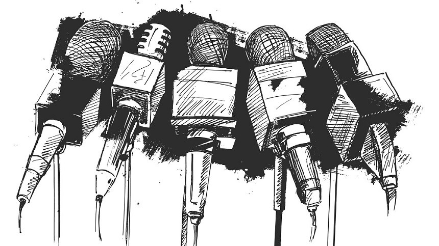

¿QUE ES LA CENSURA?
La censura es el uso del poder para controlar la libertad de expresión.
- ¿Quien la utiliza? la puede utilizar cualquier estado, grupo influyente o una persona con poder.
- ¿Para qué?Para controlar una situación en su propio beneficio.
- ¿Cómo es?Puede ser explícita, dictada por una ley, o menos explítica como la producida entre la gente debido a los tabúes sociales. Por ejemplo, en muchos lugares no se puede hablar abiertamente sobre el sexo no porque lo prohíba la ley, sino por la presión que ejerce la familia o la vecindad.
Algunos ejemplos de censura
Durante la censura franquista en España, el escritor Vázquez Montalbán tuvo que cambiar "sobaco" por "axila" en uno de sus libros. Cuando las palabras “pechos” aparecían en los libros, los censores del régimen obligaban a sustituirlas por “senos”. La palabra “obreros” tenía que sustituirse por “trabajadores” y no podían escribirse palabras como adúltero, homosexual o suicida.
En cuanto a medios digitales, Google en China estuvo filtrado hasta enero de 2010 y muchas otras páginas como YouTube o Flickr se tratan de bloquear. Hasta hace poco, si buscabas un término como “Tibet” o “Dalai lama” en el famoso buscador, los resultados eran muy diferentes si lo hacías desde China o desde España.
Según reporteros sin Fronteras, 86 periodistas murieron, 1511 fueron agredidos o amenazados y 887 detenidos en todo el mundo durante 2007. Durante 2005, se promovió la “Carta de los derechos fundamentales del blogger”. En ella se incluía una lista de empresas denunciadas por “despedir, amenazar, tomar medidas disciplinarias, multar o no contratar” a bloggers
El uso más habitual de la noción de censura refiere a la intervención que realiza un censor sobre el contenido o la forma de una obra, atendiendo razones morales, políticas, ideológicas, religiosas o de otro tipo. La censura, de esta manera, supone prohibir o limitar una expresión por considerar que sus contenidos pueden ser ofensivos o dañinos.
La censura, por lo general, está asociada a la intención de un gobierno de impedir la difusión de información contraria a sus intereses. En las sociedades democráticas, la censura previa suele estar prohibida: es decir, los gobernantes no tienen derecho de impedir la publicación de ningún material. En caso que dicho material, una vez hecho público, incurra en un delito, la Justicia puede tomar las medidas correspondientes.
La censura también puede ser moral. En algunas legislaciones, un censor se encarga de analizar distintas obras (películas, libros, etc.) para eliminar aquellos materiales que puedan resultar obscenos o que se consideren contrarios a la moral del pueblo. Así pueden recortarse escenas de desnudos en un filme o borrar groserías en un texto.
Para muchos, el concepto de censura parece lejano, como una de esas enfermedades que fueron erradicadas hace décadas. Sin embargo, en ciertos ámbitos, esta mano autoritaria sigue actuando, cortando partes de obras por considerarlas inadecuadas para el público, ocultando absurdamente la homosexualidad de un personaje a través de un doblaje mediocre, cubriendo con más ropa a ciertos personajes de videojuegos japoneses para que los seres humanos de occidente no se horroricen ante un cuerpo de su misma especie, el mismo que ven desnudo todos los días durante el aseo personal.
El problema de la censura no acaba en el perjuicio que pueda ocasionar a los autores, quienes ven sus creaciones manoseadas y deben aceptar las múltiples y poco creativas mutilaciones que éstas sufren para adaptarse a la mente cerrada de unos pocos que tienen mucho poder; el público, al no poder recibir espontáneamente contenido artístico, también pierde, y quizás lo hace en mayor proporción que los creadores.
